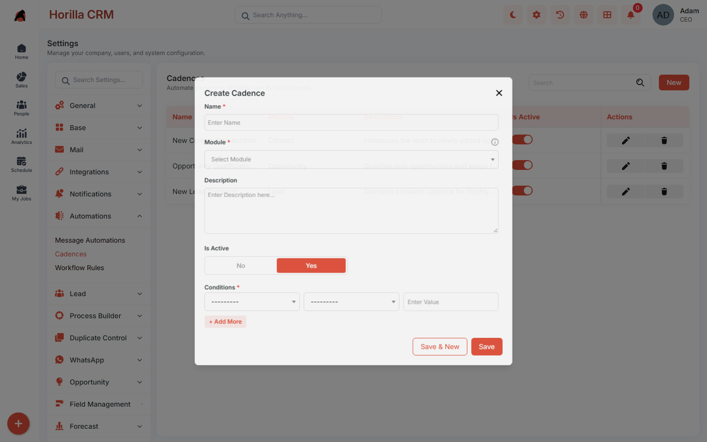
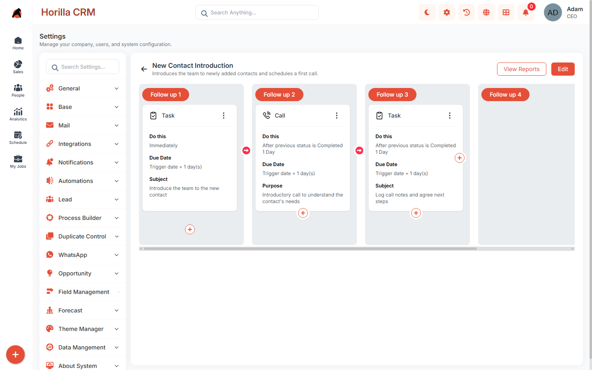

Overview
- Cadences are automated, multi-stage outreach workflows for CRM records. A cadence triggers a sequence of tasks, calls and emails once its conditions are met.
- Each stage moves forward automatically when the previous stage's activity reaches a configured status.
- Cadences support branching, so different outcomes lead to different follow-ups.
- Cadences can be applied to four modules: Lead, Contact, Account and Opportunity.
Cadence List
The list shows every cadence with:
- Name
- Module
- Description
- Is Active status
- Edit and Delete actions
Create Cadence
Click New to open the creation form.

Fields
| Field | Description |
|---|---|
| Name | The cadence's name. |
| Module | The module it applies to: Lead, Contact, Account or Opportunity. |
| Description | An optional description. |
| Conditions | Determines which records are enrolled in the cadence. |
| Is Active | Turns the cadence on or off. |
Cadence Detail View
- Click the cadence name to open its detail view.
- Follow-ups are shown in a kanban-style layout organised by stage (Follow up 1, Follow up 2 and so on).

Available Actions
- Add Follow-up
- Edit Cadence
- View Reports
Follow-Ups
- Follow-ups are the actions carried out within a cadence.
- Each one belongs to a stage and can be a Task, a Call or an Email.
- Click + in the detail view to add one.
Common Fields
| Field | Description |
|---|---|
| Follow up Type | Task, Call or Email. |
| Do This | When to run it: Immediately, Minute, Hour, Day or Month. |
| Do This Value | The delay amount. Not required when Do This is set to Immediately. |
| After Previous Status Is | The previous stage's status that triggers this follow-up. Required from Follow up 2 onward. |
Note
A configured mail server is required before an email follow-up can be added.
Follow-Up Stages
Follow up 1 (Initial Stage)
- Only one Follow up 1 is allowed.
- It triggers when a record matches the cadence conditions.
- It requires no previous status.
Follow up 2+ (Subsequent Stages)
- Triggered by the previous stage's status.
- The After Previous Status Is field is required.
Branching Workflows
From Follow up 2 onward, a single parent follow-up can have several follow-ups beneath it, each tied to a different status.
Example
- Follow up 1 is a Task.
- If it is completed, Follow up 2 is an Email.
- If it is overdue, Follow up 2 is a Call.
- Only the branch whose status matches is run.
Adding Follow-Ups
- + on the right side adds the next stage.
- + below adds another follow-up within the same stage (Follow up 3 and later).
Note
A follow-up that has child branches cannot be deleted.
Cadence Execution
Record Enrollment
- When a record is created or updated, the active cadences are evaluated.
- Records that match trigger Follow up 1.
Stage Progression
- When an activity's status changes, the next-stage follow-ups are triggered.
- Only the matching branch runs.
Backfill
- On activation, Follow up 1 is applied to existing records.
- On update, pending activities are synced.
Cadence Reports
Reports are opened from the cadence detail view.
Task Report
Call Report
Email Report
Cadence Tab on Record
A Cadence tab is available in the detail view of a CRM record.
Editing and Deleting
- Edit Cadence – available from the list or the detail view.
- Edit Follow-Up – available from the follow-up card's menu.
- Delete Follow-Up – blocked when the follow-up has child branches.
- Delete Cadence – removes all of its follow-ups and conditions.
Activate / Deactivate
- Active – the cadence runs automatically.
- Inactive – execution stops.
- Reactivation – applies Follow up 1 to matching records again.
Expected Behaviour
- Cadences can be created for any supported module.
- Conditions determine which records are enrolled.
- Follow up 1 triggers automatically.
- Follow up 2 and later depend on the previous stage's status.
- Branching allows several outcome paths.
- Tasks and calls create activities.
- Emails are sent using templates.
- Activation backfills existing records.
- Updates sync pending activities.
- Reports show execution metrics.
- The record view shows cadence progress.
- Follow-ups with children cannot be deleted.
- Execution is fully automated through system triggers.